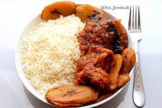
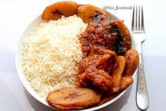

Rice and stew
A stew is a combination of solid food ingredients that have been cooked in liquid and served in the resultant gravy. A stew needs to have raw ingredients added to the gravy. Ingredients in a stew can include any combination of vegetables and may include meat, especially tougher meats suitable for slow-cooking, such as beef, pork, lamb, poultry, sausages, and seafood. While water can be used as the stew-cooking liquid, stock is also common. A small amount of red wine is sometimes added for flavour. Seasoning and flavourings may also be added. Stews are typically cooked at a relatively low temperature (simmered, not boiled), allowing flavours to mingle.
Ingredients
Steps for preparation
Boil the rice with salt until is cooked and dry
Season meat properly to get the stock
When it is cooked, you could fry or grill the meat if you like
Pour the vegetable oil into a pot and place on heat
Throw in the chopped onions when the oil is hot
Pour the blended tomatoes into the pot and allow to cook for about 10mins
Pour in the stock and cook further
Add the seasoning cube, ginger, crushed garlic, curry and thyme
Cook for another 20mins
Add the meat and salt to taste
 
